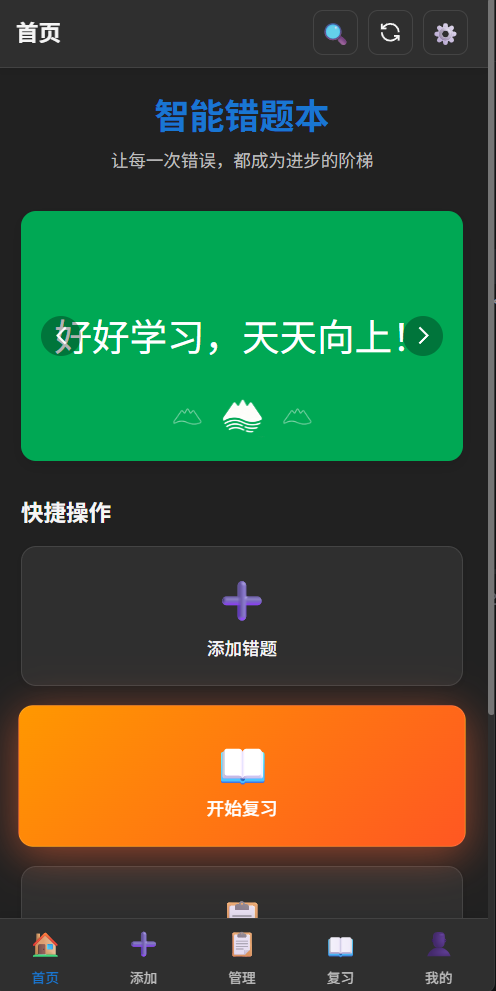
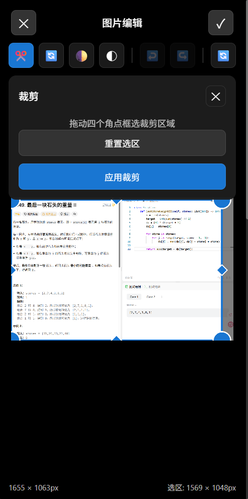
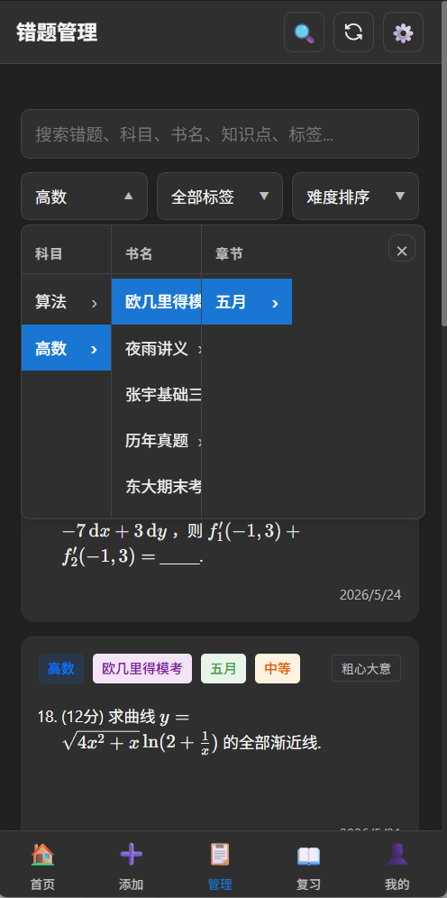
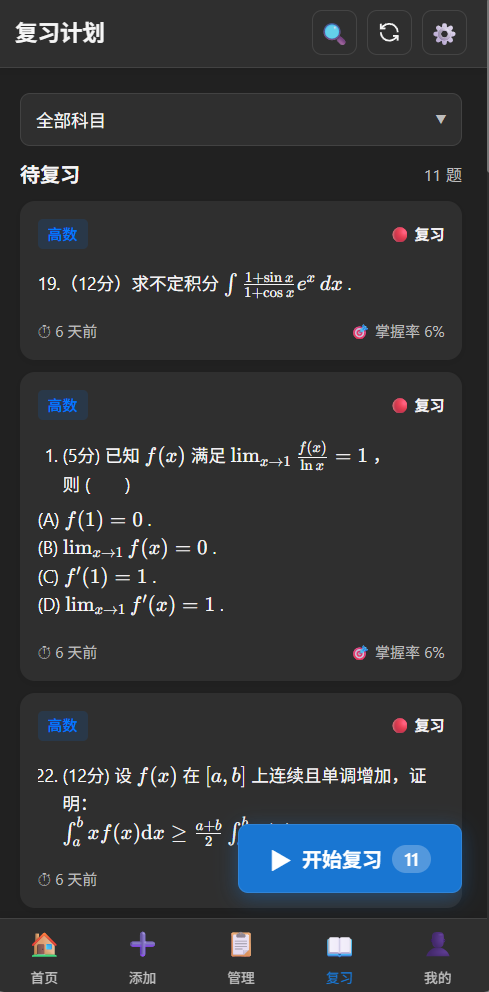
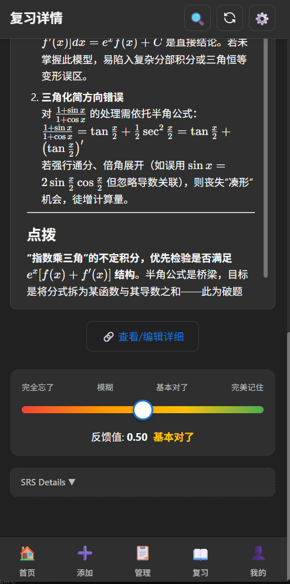
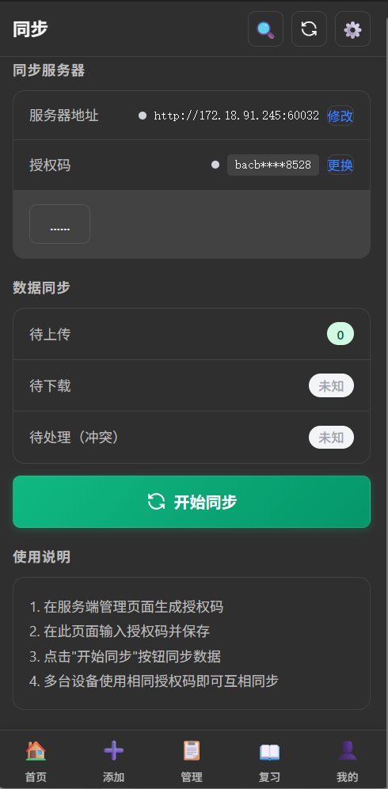
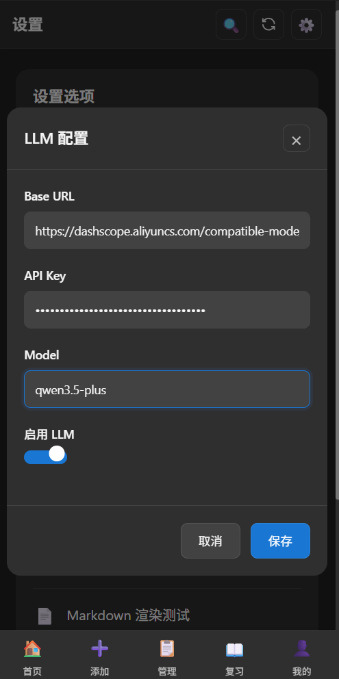

让每一次错误，都成为进步的阶梯

欢迎语、励志标语自动轮播展示
添加错题、开始复习、错题管理等快捷操作按钮

从文件管理器中选择题目截图/照片
调用系统摄像头拍摄题目，需授予相机权限
裁剪、旋转、缩放调整图片
前置条件：已在设置中配置 LLM 接口
| 字段 | 说明 | 必填 |
|---|---|---|
| 题干 | 题目内容，支持 Markdown + LaTeX 公式 | ✅ |
| 题型 | 单选题/多选题/判断题/简答题/填空题/论述题/计算题 | ✅ |
| 科目 | 从已有科目中选择或新建 | ✅ |
| 标准答案 | 参考答案，支持 Markdown | 可选 |
| 解析 | 题目解析，支持 Markdown | 可选 |
| 错题笔记 | 自己的反思记录 | 可选 |
| 来源 | 书 → 章节 → 知识点 三级分类 | 可选 |
| 错因标签 | 自定义标签，如"粗心""概念不清"等 | 可选 |
| 附件图片 | 原始题目图片/答案图片 | 可选 |
标签可自定义名称和颜色
支持同时选择多个标签
标签可在管理页面统一管理
Markdown + LaTeX 支持：题干、答案、解析等字段均支持 Markdown 语法和 $...$ / $$...$$ LaTeX 数学公式。

模糊匹配题干、科目、书名、知识点
支持科目 → 书名 → 章节 → 知识点四级级联筛选
全部时间、最近7天、最近30天、最近90天
支持按难度、掌握程度进行正序或倒序排序
每张卡片显示：题干摘要、题型标签、科目 + 来源信息、错因标签（彩色小方块）、SRS 复习状态
点击任意错题进入详情页，可修改：题干、答案、解析、错题笔记、科目、来源、错因标签、附件图片（新增/删除）


本系统采用 SDR（Stability, Difficulty, Retrievability）记忆模型，基于连续反馈自适应调整复习计划。
核心公式：R = e^(-t/S)
- R：预测召回率（0~1），1 表示完全记得
- t：距离上次复习的时间（天）
- S：稳定性（天），表征记忆强度
复习反馈越积极，稳定性增长越快，下次复习间隔越长。
| 评分 | 感觉 | 间隔变化 |
|---|---|---|
| 0.0 | 完全忘了 | 重置为短间隔，视为全新 |
| 0.2 | 几乎想不起 | 略微缩短 |
| 0.4 | 有点印象 | 保持 |
| 0.6 | 想起来了 | 略微延长 |
| 0.8 | 基本记得 | 明显延长 |
| 1.0 | 滚瓜烂熟 | 超长间隔（上限1000天） |
在「个人中心」页面可查看：错题总数、待复习数量、复习趋势图表
统计所有错题总数
当前需要复习的题目数量
处于记忆状态的题目数量
尚未开始复习的新题目
| 指标 | 说明 |
|---|---|
| 平均稳定性 | 所有卡片的平均复习间隔天数 |
| 平均难度 | 所有卡片的平均难度系数 |
| 累计复习 | 总复习次数 |
| SRS 卡片 | 参与间隔重复的卡片总数 |
可视化展示各科目错题数量分布，支持点击管理科目
查看他人分享的错题，可按时间排序浏览
点击「获取」按钮将分享的错题添加到本地
支持 Markdown 和 LaTeX 公式渲染
| 格式 | 特点 | 用途 |
|---|---|---|
| HTML | 美观排版，含公式渲染 | 打印、分享 |
| JSON | 结构化数据 | 备份、迁移 |
可选择是否包含答案和解析，在设置中控制
可筛选特定科目导出
在 Android 设备上，不仅可导出到本地，还可以通过「分享按钮」调用系统分享：
数学公式排版与 App 内完全一致
导出后用 Chrome/Edge 打开，按 Ctrl+P 可选择「另存为 PDF」
HTML 推荐方案 — 浏览器原生渲染，数学公式排版与 App 内完全一致。导出后用 Chrome/Edge 打开，按 Ctrl+P 可选择「另存为 PDF」，效果远胜截图方案。
仅支持 SmartErrorNotebook 导出的 .json 格式文件
支持 Markdown 和 LaTeX 公式渲染预览
答案和解析可折叠显示，方便自我测试
可为每题选择科目、题型、来源等元数据
系统会自动去重（同内容跳过）
| 校验项 | 说明 |
|---|---|
| JSON 格式 | 验证文件是否为有效的 JSON 格式 |
| 版本字段 | 检查是否包含必要的 version 字段 |
| 题目数组 | 验证 questions 是否为非空数组 |
| 必填字段 | 检查每题是否包含 prompt 字段 |
导入过程中若文件版本与当前版本不匹配，会显示版本警告提示

注意：同步功能需要自行部署同步服务器，或连接到已部署的服务器。
cd server pip install -r requirements.txt # 启动（默认 SQLite） python app.py
服务器默认运行在 http://localhost:5000
所有数据先保存在本地，有网络时同步
客户端与服务端通过握手比对版本号，确定双向传输内容
当多设备同时修改同一记录时，会提示用户手动解决冲突

| 设置 | 选项 |
|---|---|
| 主题 | 浅色 / 深色 / 跟随系统 |
本应用兼容任何兼容 OpenAI API 格式的 LLM 服务
| 参数 | 说明 | 示例 |
|---|---|---|
| 接口地址 | API 基础 URL | https://api.openai.com |
| API Key | 密钥 | sk-... |
| 模型名 | 模型标识 | gpt-4o, deepseek-chat |
| 系统提示词 | 自定义 AI 行为（可选） | — |
gpt-4o, gpt-4o-mini
qwen3.5-plus
glm-4-flash, glm-4
deepseek-chat
配置完成后，可在设置页点击「测试」按钮验证 LLM 是否正常工作
自定义 AI 识别题目信息时的提示词模板
| 设置 | 说明 |
|---|---|
| HTML 导出包含答案和解析 | 开关控制导出时是否包含参考答案和解析内容 |
A: 所有数据存储在本地 SQLite 数据库中，位置：
建议定期通过「导出 → JSON」备份数据。如果开启了同步，数据还会备份到服务器。
A: 1. 旧设备：导出 JSON；2. 新设备：安装应用 → 导入 JSON；3. 如果使用同步功能，直接在新设备配置相同 auth_key 即可同步
A: 确保图片清晰、文字可辨；可在设置中调整 LLM 的系统提示词；识别结果可手动修改
A: 使用筛选功能只复习特定科目；坚持复习，算法会自动将熟练的卡片间隔拉长；对于彻底掌握的题目，可在详情页删除
A: 可以。同步服务器是平台无关的，Android 设备和桌面端配置同一个服务器地址和 auth_key 即可双向同步。
智能错题本 v0.1.1